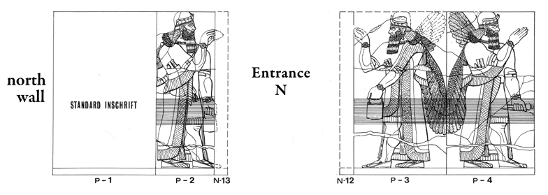

Room P
Room P retains only the western section of its north wall, including an entryway
into room N. Preserved panels or fragments of panels are indicated, and hyperlink
to associated CDLI web pages (composite pages together with available information
about the physical artifacts).
